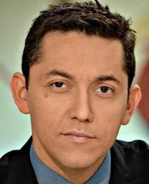

Gábor A. Somorjai
“En estos momentos, donde se habla tanto de transición energética en manos de la ciudadanía,
este proyecto demuestra que la gente quiere y puede hacerlo si se le dota de herramientas y procesos claros. Aún queda mucho recorrido pero es un
paso hacia el cambio sistémico que la energía y las personas necesitamos”.
Javier Ruiz Díaz

“La producción de carne ha crecido de forma exponencial en España, casi un 1.000% desde los años
60, frente a poco más del 150% en la UE o en otros países como Alemanía, Dinamarca o Francia. Este crecimiento demencial de la producción de carne solo
ha sido posible con un destructivo modelo de ganadería industrial que está dejando una nefasta huella ecológica y social. Within Earth apuesta a una solución
de raíz y permanente que va mucho más allá de un simple modelo de negocio, y permitanme malusar la palabra ”negocio” ”.